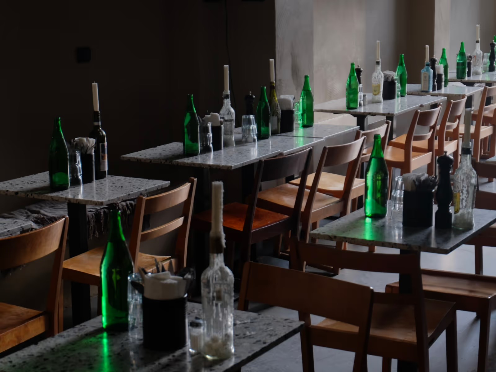
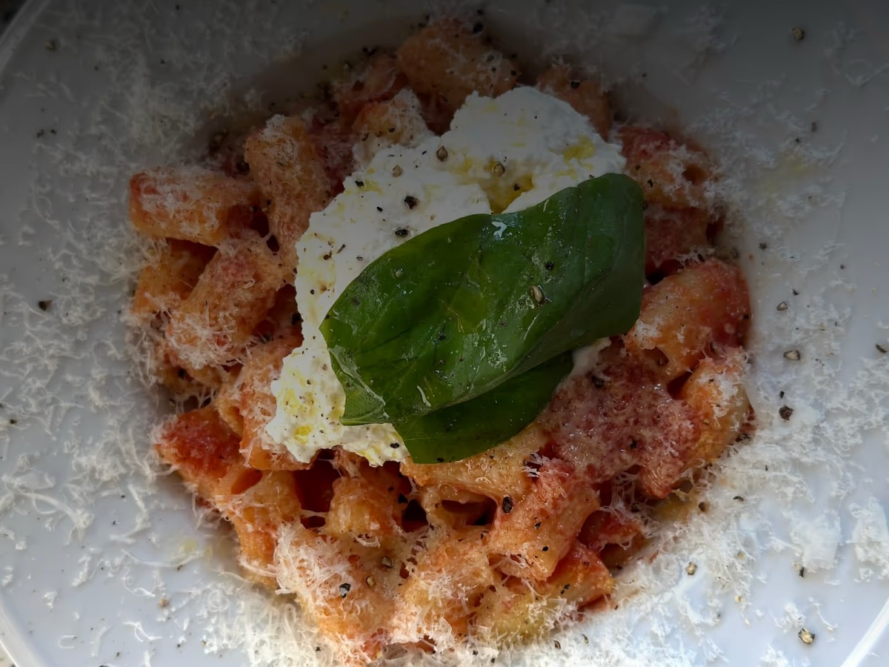
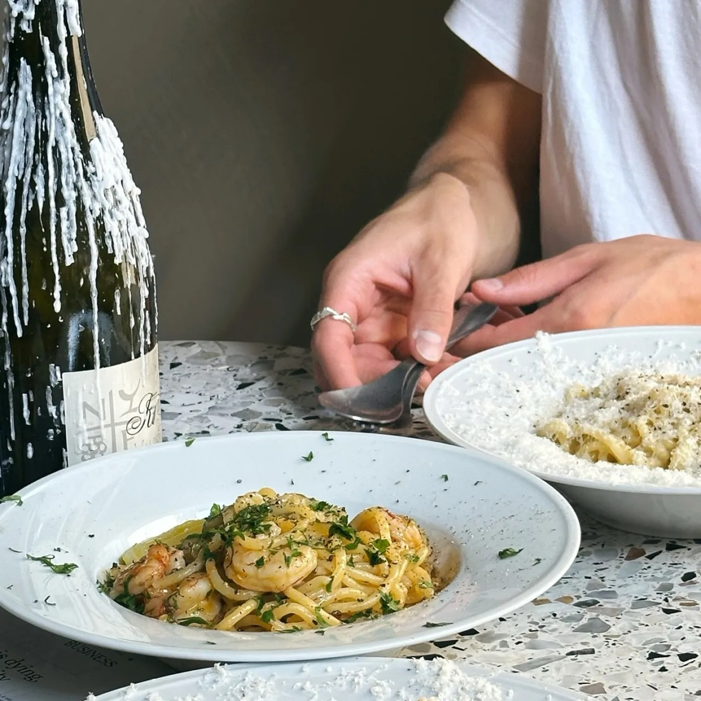
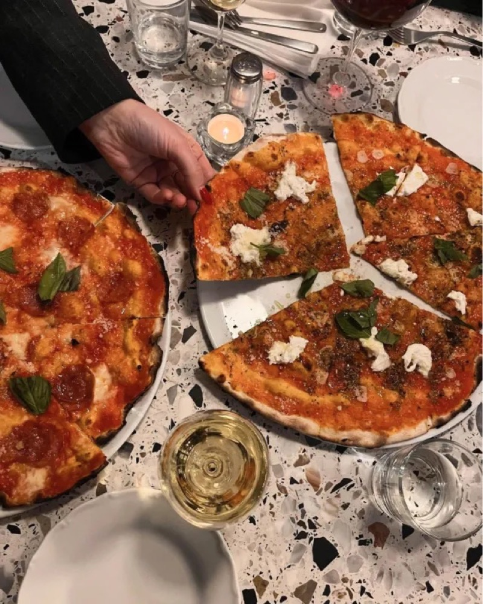
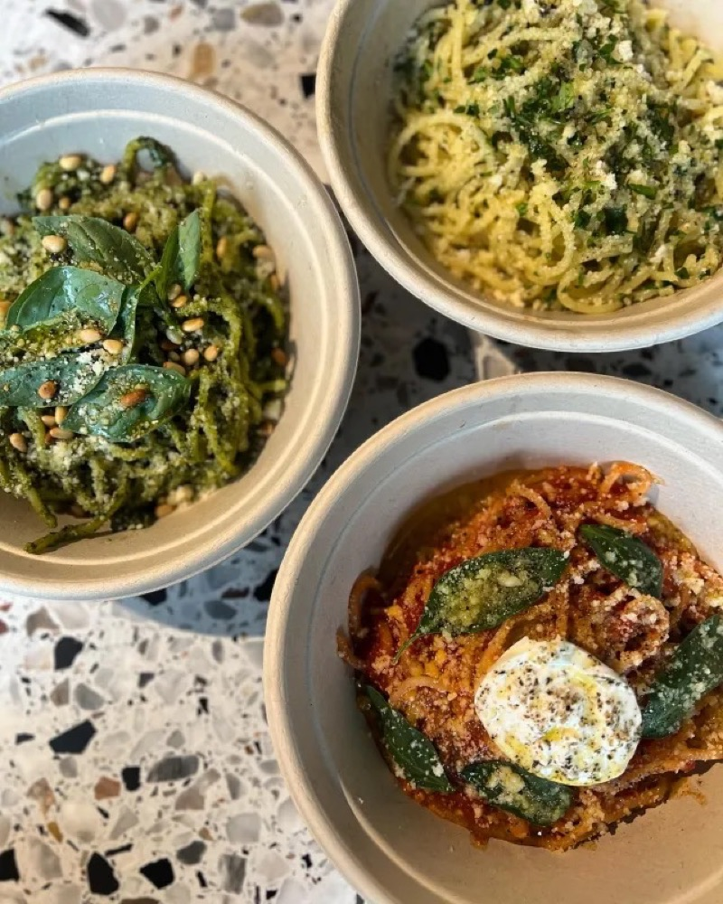
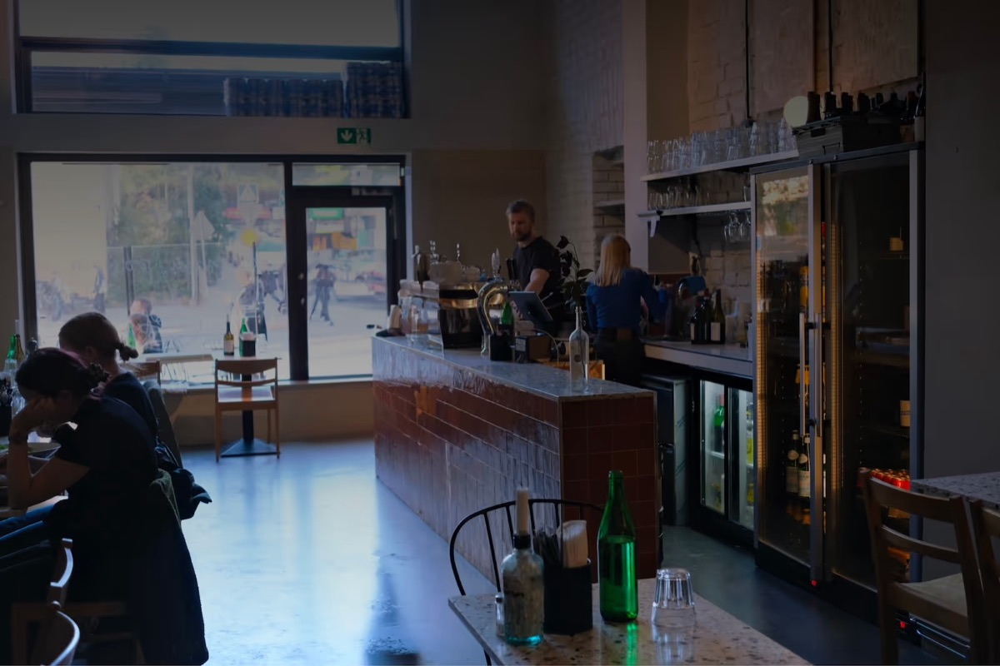

Cucina povera betyder fattigmansköket – Italiens konst att göra något fantastiskt av det enkla. Vi har en särskild plats i hjärtat för Rom.
Syditaliensk tradition på 100 % durumvete.
Tonda romana ”scrocchiarella” med fior di latte från Agerola.
Glutenfri pasta – och pizza för +25 kr.
Pasta, pizza och ett glas vin – vid Odenplan, i Hornstull eller i saluhallen i Danderyd.




Vi har flera rum i olika storlekar – från intima middagar och möten till fester för 50–60 personer.
Beställ via Uber Eats, Foodora eller Wolt – eller hämta själv hos oss.
Köket stänger en timme innan restaurangen. Finns inte tiden ni vill ha? Det finns alltid platser för drop in.